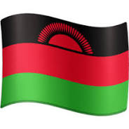

Chawanangwa Gondwe
About me
My name is Chawanangwa Gondwe, and I am a student at Brigham Young University-Idaho. I am currently enrolled in the WDD131 Dynamic Web Development course, where I am learning how to create dynamic and interactive web applications. I have a passion for technology and enjoy exploring new programming languages and frameworks. In my free time, I like to work on personal projects, contribute to open-source software, and stay updated with the latest trends in web development.
Country Information

Chawanangwa Gondwe is from Malawi, a country located in southeastern Africa.
Known for its beautiful landscapes, including Lake Malawi, the country has a rich cultural heritage and diverse wildlife.
Malawi is often referred to as the "Warm Heart of Africa" due to the friendliness of its people.
The country faces challenges such as poverty and limited access to education, but it is also known for its community spirit and resilience.
Web Resourses
Here are some useful web resources that I frequently use: